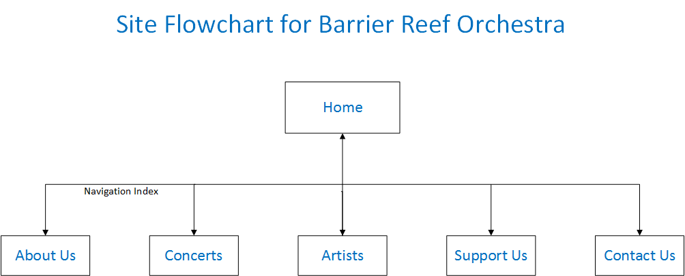

CP1406 - Assignment 2 - Project Plan
Group Name: G6
Group Members: Bonnie Gilsenan, Ben Newbould, Harsh Dhadwal & Tyrone Napoli
Mission Statement:
The purpose of implementing the new website is to improve attendance at concerts of the Barrier Reef Orchestra(BRO)
by increasing ticket sales by 20% over a 12 month period. This will be achieved by promoting the Orchestra and its
events to a younger audience, who will then buy tickets to these events.
Additionally, the website will promote the membership benefits of the Barrier Reef Orchestra, and facilitate
users to register as members online.
Finally, all of the above will increase the level of awareness of the Orchestra and its events in Townsville and Far
North Queensland.
Success Evaluation:
The success of the website will be measured by the percentage increase in the attendance at concerts over a 12 month
period after the new website is launched. If the increase is a minimum of 20%, then the goal has been achieved.
Additionally, the membership registrations via the online form will be tracked and the percentage increase
against the membership at the time the site goes live will be calculated. This will also provide the client with
some metrics around the new website; at present, the Orchestra has no analytics from the current website.
Target Audience:
The target audience for the new site is people aged between 22 and 40 years of age (i.e. those people born between
1977 and 1995)[1]. This age range includes the cohort called Generation Y or the Millennials, which is the largest
demographic age group since the Baby Boomers.
The new site will encompass the following design features to cater for the Millennials:
- The site will be optimised for mobile devices, which are vitally important to the target audience. "Millennials
love their phones... being on-the-go, and always being plugged in." (Retrieved from https://www.marketingcloud.
com/blog/7-ways-marketers-can-attract-and-appeal-to-millennials/ Nov 13, 2013 By Drew Beechler ).
- The pages will incorporate an asymmetric layout to delimit the site from a traditional website design.
- Pages will have a minimum amount of text content, except for the artist detail pop up windows.
- The navigation bar will be replaced by an innovative side bar which is in the shape of a violin
surrounded by the navigation links.
- The background to the web pages will feature different instruments for each page, with a 'funky' coloured image
of stylised musical notation in the right side of each page.
- The colours used for the headings and text will reflect the colours of the Great Barrier Reef.
All of the above design features are intended to appeal to the target audience.
Reference:
- [1] PwC; University of Southern California and the London Business School (2013). "PwC's NextGen: A global
generational study" (PDF). PwC's NextGen: A global generational study. PwC. Retrieved from
http://www.pwc.com/gx/en/hr-management-services/pdf/pwc-nextgen-study-2013.pdf
Content:
Home page:
- Barrier Reef Orchestra(BRO) logo
- Navigation bar:
- Home | About Us | Concerts | Artists | Support Us | Contact Us
- Upcoming concerts
- Bulletin Board
About Us page:
- North Queensland Ensembles Inc.
- History of BRO
- Like us on Facebook
Concerts page:
- List of all concerts and event details
- How to buy tickets
Artists page:
- Meet Our Artists
- Featured musician - includes short information text and a highlighted image
- Individual artist detail will open in a modal box that is displayed on top of the current page.
- List of all artists (includes short information text and a small image)
- Individual artist detail will open in a modal box that is displayed on top of the current page.*
- Meet Our Conductors
- Individual conductor detail will open in a modal box that is displayed on top of the current page.*
- Become a player in the BRO
Support Us page
- Become a benefactor
- How to donate
- Become a member
- Online membership form
Contact Us page:
- Contact details
- Join Us
- Like us on Facebook
* The use of a modal box in lieu of individual artist pages was discussed with Dr Art Suwanwiwat on 3/05/2017.
Site Flowchart:

Github repository:
https://github.com/Napster56/CP1406-A2-G6